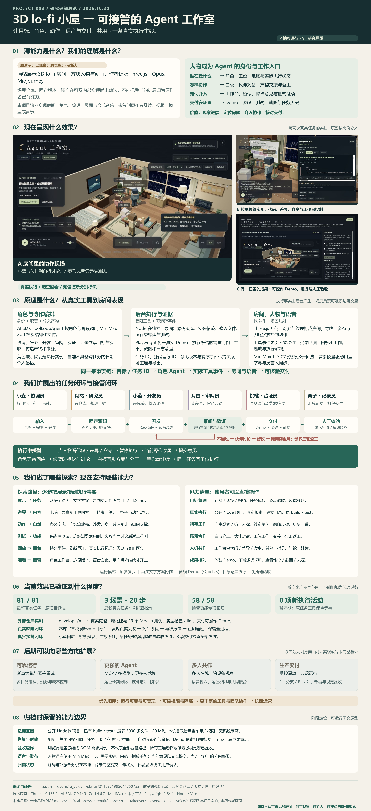
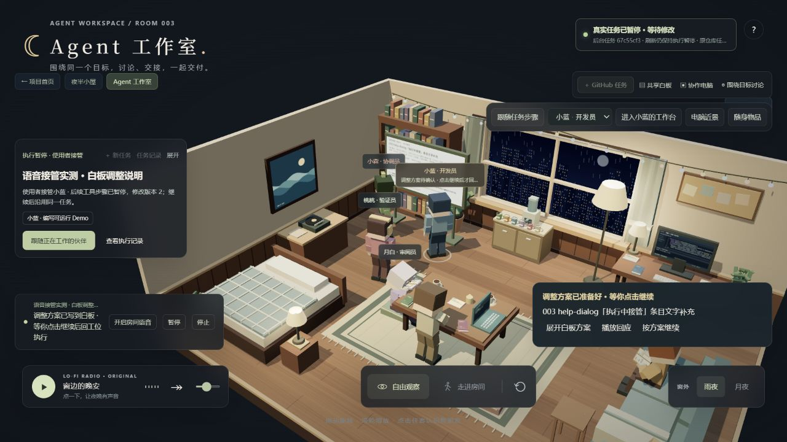
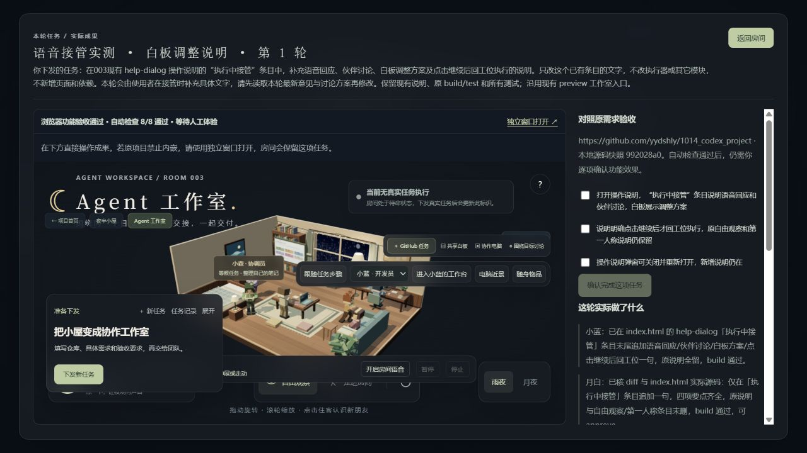

可交互的 3D lo-fi 房间
原作者演示房间、方块人物与动画，提及 Three.js、Opus、Midjourney。原场景仓库、固定版本、资产许可及内部实现仍待确认。当前能确认的技术上游是 Three.js；我们使用其场景、相机、材质、灯光与观察控制能力。
本项目独立实现几何、纹理、人物、界面与合成音乐，未复制原作者图片、视频、模型或音乐。这里记录的是从原演示获得启发后的独立探索。
003 / LO-FI ROOM → AGENT WORKSPACE
把每个人物绑定到一个工作身份，让任务、电脑、白板、声音和交付共用同一条执行主线。
V1 研究原型 · Pages 预设演示 / 本地真实执行
公网可观察人物、漫游、体验预设协作并听已有 MiniMax 录音。真实编码、测试、动态对话及执行接管在本地 Node 服务中运行。

沿用既有引导图 · 点击打开 2560 × 5580 高清原图 ↗01 / SOURCE & VALUE
原作者演示房间、方块人物与动画，提及 Three.js、Opus、Midjourney。原场景仓库、固定版本、资产许可及内部实现仍待确认。当前能确认的技术上游是 Three.js；我们使用其场景、相机、材质、灯光与观察控制能力。
本项目独立实现几何、纹理、人物、界面与合成音乐，未复制原作者图片、视频、模型或音乐。这里记录的是从原演示获得启发后的独立探索。
价值落在观察进展、定位问题、介入协作和核对交付。
02 / HOW IT WORKS
六个角色分别负责协调、研究、开发、审阅、验证和记录。AI SDK 按角色与阶段调用 MiniMax，结构化产物由 Zod 校验，并传给下一位伙伴。
本地 Node 在独立目录固定源码、安装依赖、读写文件，运行原构建测试。Playwright 操作实际 Demo，输出按需求编号的结果与截图。
有序事件关联任务、角色与产物，驱动行走、入座、打字、交接、电脑和白板。MiniMax TTS 播报公开回应，音频能量驱动口型。
目标与任务 ID → 角色 Agent → 实际工具事件 → 房间、工作台与语音 → 可核验交付
场景回放与后台执行解耦。刷新可接回当前阶段；人物日常活动不推进真实任务，也不代表模型正在执行。角色按阶段创建执行实例，尚无跨任务长期个人记忆。
03 / OUR EXPLORATIONS
独立实现房间、自由观察和第一人称，把六个人物绑定到职责、工位与音色。
白板讨论、坐电脑前工作、面对面交接；阅读、喝水和笔记有内容，拿放道具连续，改进入座、脚底支撑与减速避让。
从文字方案、离线 QuickJS Demo，扩展到克隆原仓库、依赖安装、修改源码、原构建测试和本机 Demo。
验证员按需求操作实际页面，失败后找开发员讨论、修改，再用冻结的原用例重测，通过后才交付。
持久化任务和事件，区分真实执行、历史记录和预设演示；角色工作台呈现实际代码、前后差异和命令输出。
当前操作收尾后暂停；提交意见，角色回应并邀请相关伙伴讨论，白板形成调整方案。用户点击继续后，沿用同一任务回工位执行。
04 / UNDERSTANDING MAP
直接使用已生成的总览图，原始字节保留。图中的“未发布、未提交”是制图时状态；当前发布状态以本页及部署记录为准。
05 / CURRENT CAPABILITIES
| 能力 | Pages 公开体验 | 本地 Node 服务 |
|---|---|---|
| 房间与人物 | 自由观察、第一人称、雨夜/月夜、日常动作 | 同样支持 |
| 目标与协作 | 浏览器本地目标、预设分工、交接、返工与既有录音 | 真实模型生成方案、伙伴对话和语音 |
| 角色工作台 | 观察预设产物与演示记录，明确标识来源 | 实际源码片段、修改差异、执行命令与输出 |
| 仓库任务闭环 | 本页查看实测过程与结果 | 克隆/本地快照、依赖、源码修改、原构建测试与浏览器验收 |
| 执行中接管 | 阅读操作说明与真实证据 | 工具边界暂停、意见版本、语音讨论、白板方案、同任务继续 |
| 交付与恢复 | 导出演示记录，数据留在当前浏览器 | Demo、源码 ZIP、命令/截图、刷新重连、反馈续轮 |
06 / OBSERVED RESULTS
固定上游源码，安装、修改、运行原 build/test；19 个 Mocha 用例与类型检查、lint 通过，交付消费真实构建产物的 Demo。
保留两次返工和工具误判修正，不将模型口头声明作为测试结果。
浏览器复现原版失败，桃桃找小蓝讨论。首次修复漏导入又被页面报错拦下，再次修复与同用例重测后交付。
原77项测试、新4项测试和三场景28步浏览器操作通过，修复同步回本项目。
小蓝语音回应、桃桃提出建议、白板修正分工；等操作者点击继续后，原任务完成修改、审阅与独立验证。
81项原项目测试、三场景20步浏览器操作、8项交付检查通过；接管实现专项58/58通过。


不同范围的测试数字不相加。截图是本地实测记录，不是当前公网正在执行的新任务；最终人工体验验收由用户确认。
07 / NEXT DIRECTIONS
以下为可扩展方向，尚未实现或尚未完整验证。
断点续跑、幂等重试、多任务队列、资源与成本控制；受控隔离、权限边界与云端持久运行。
接入 MCP、多模型、更多技术栈；角色长期记忆、技能复用与跨项目知识。
多人在线、跨设备观察、语音输入、角色权限和共同接管，让办公室成为团队协作入口。
Git 分支、PR、CI、正式部署，以及截图、无障碍与三维场景的视觉验收，形成长期可运营的交付工作流。
08 / DEPLOYMENT & LOCAL EXECUTION
理解摘要、原始总览图、3D 房间、预设协作与已有 MiniMax 录音。公开构建不包含 Node 后端、环境文件、运行缓存与 API 密钥；无需配置 MiniMax 即可体验。
实时模型、动态语音、仓库执行与接管保留本地运行。公网入口不会轮询本地接口，也不会把预设流程冒充真实编码。
GitHub Actions Secrets 可以将 MINIMAX_API_KEY 提供给构建、预生成语音或验证工作流；它不会让 Pages 获得常驻 API 服务。
未来线上实时运行需单独部署受保护的 Node 后台，在后台配置密钥。不能把密钥写成 VITE_* 变量编进浏览器代码。
cd projects/003-lofi-room/web
npm ci
# 在 web/.env.local 设置 MINIMAX_API_KEY
# 或设置 MINIMAX_ENV_FILE 指向已有私有配置
npm run dev本地默认入口：http://127.0.0.1:4175/1014_codex_project/003-lofi-room/?view=workspace。Node 需 ≥22.12.0；首次浏览器验收需执行 npm run browser:install。详细范围、来源与启动方式见 运行说明 ↗。